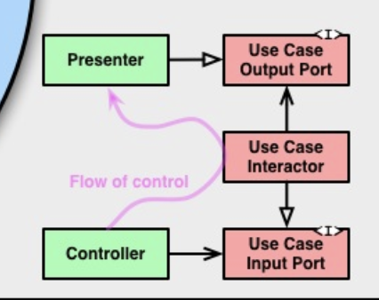
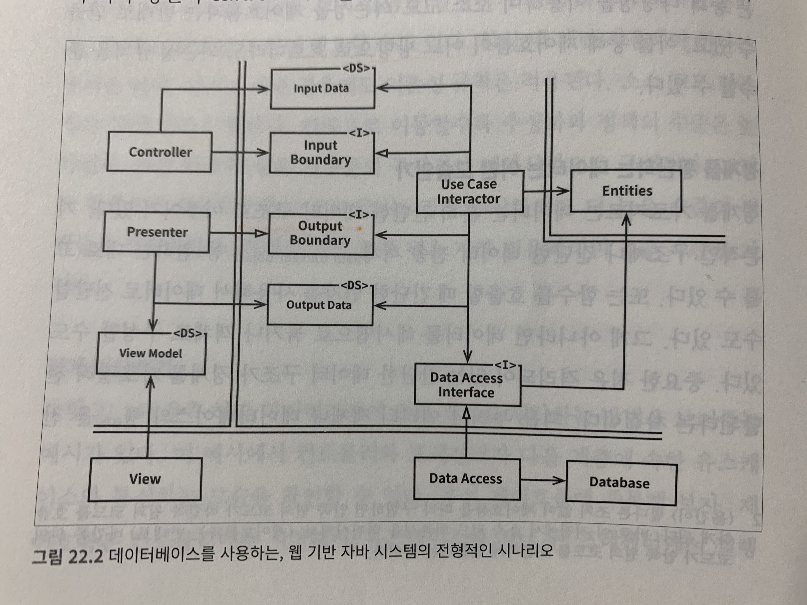

“CleanArchitecture 22장”
시스템 아키텍처 아이디어

육각형 아키텍처(Hexagonal Architecture)
– 포트와 어댑터
– 앨리스터 코오번이 개발
– 시스템을 응용 프로그램 코어, 데이터베이스, 사용자 인터페이스, 테스트 스크립트 및 다른 시스템과의 인터페이스와 같이 느슨하게 결합 된 여러 교환 가능한 구성 요소로 나눔
– 어댑터는 구성 요소와 외부 환경을 연결하는 접착제. 외부 세계와 응용 프로그램 구성 요소 내부의 요구 사항을 나타내는 포트 간의 교환을 조정
DCI(data, Context and Interaction)
– 제임스 코플리언과 트리그베 린스쿠주가 만듬
– 개체) 통신 시스템을 프로그래밍하는 데 사용되는 패러다임
BCE
– 이바 야콥슨이 알림
목표
- 관심사의 분리
소프트웨어를 계층으로 분리함으로써 [관심사의 분리] 라는 목표를 달성했다. 각 아키텍처는 최소한 업무 규칙을 위한 계층 하나와 사용자와 시스템 인터페이스를 위한 또 다른 계층 하나를 반드시 포함한다.
아키텍처 특징
프레임워크 독립성
– 다양한 기능의 라이브러리를 제공하는 소프트웨어, 즉 프레임워크의 존재 여부에 의존하지 않음
– 프레임워크가 지닌 제약사항에 시스템을 맞추지 않음
테스트 용이성
– 업무 규칙은 UI, 데이터베이스, 웹서버 또는 외부 요소가 없이도 테스트 할 수 있음
UI 독립성
– 시스템과 상관없이 UI 쉽게 변경 가능
– 업무 규칙을 변경하지 않은 채 웹 UI를 콘솔 UI로 대체
데이터베이스 독립성
– 업무 규칙은 데이터베이스에 결합되면 안됨
– 오라클 <-> MS SQL <-> 몽고DB
외부 에이전시에 대한 독립성
– 업무 규칙은 외부 세계와의 인터페이스에 대해 전혀 알지 못함

위 다이어그램은 이들 아키텍처 전부를 실행 가능한 하나의 아이디어로 통합하려는 시도이다.
의존성 규칙
- 각각의 원은 소프트웨어에서 서로 다른 영역을 표현
- 안으로 들어갈 수록 고수준의 소프트웨어
- 바깥쪽 원은 메커니즘, 안쪽 원은 정책
- 아키텍처가 동작하도록 하는 가장 중요한 규칙 > 의존성 규칙
소스 코드 의존성은 반드시 안쪽으로, 고수준의 정책을 향해야 한다.
내부 원에 속한 요소는 외부 원에 속한 어떤것도 알지 못한다. 특히 외부 원에 선언된 어떤 것에대해서도 그 이름을 언급해서는 안된다.
ex) 함수, 클래스, 변수, 소프트웨어 엔티티
외부의 원에 선언된 데이터 형식도 내부의 원에서 절대로 사용되서는 안된다. 외부 원에 위치한 어떤것도 내부의 원에 영향을 주지 않아야 한다.
엔티티
- 전사적인 핵심 업무 규칙 캡슐화
- 단일 애플리케이션의 업무 객체
- 메서드를 가지는 객체 또는 일련의 데이터 구조와 함수의 집합
- 고수준인 규칙을 캡슐화
- 페이지 네비게이션이나 보안 관련사항 변경 시 업무 객체는 영향을 받지 않음
- 애플리케이션의 변경 시 엔티티 계층은 영향을 받아선 안됨
유스케이스
애플리케이션에 특화된 업무 규칙을 포함
시스템의 모든 유스케이스를 캡슐화 하고 구현
엔티티로 출입하는 데이터 흐름 조정
엔티티가 유스케이스의 목적을 달성하도록 이끔
해당 계층의 변경이 엔티티에 영향을 주지 않음
외부 요소(데이터베이스, UI, 프레임워크 등)의 변경에 영향을 받아선 안됨.
인터페이스 어댑터
- 일련의 어댑터들로 구성
- 유스케이스, 엔티티가 보기편한 데이터 형식 <-> 데이터베이스나 웹 같은 외부 에이전시에 편리한 형식
- MVC 아키텍처를 포함
- 데이터 베이스에 대해 알아서는 안됨
프레임워크와 드라이버
- 프레임워크나 도구(ex 데이터베이스)로 구성
- 모든 세부사항이 위치
- 세부사항을 외부에 위치시켜 피해를 최소화
경계 횡단하기

위 다이어그램은 원 경계를 횡단하는 방법을 보여주는 예시이다. 컨트롤러와 프레젠터가 유스케이스와 통신하는 모습이다.
제어흐름 : 컨트롤러 -> 유스케이스 -> 프레젠터
– 안쪽 원의 코드가 바깥쪽 원의 코드를 호출하게 됨
소스 코드 의존성 : 유스케이스를 향해 안쪽을 가리킴
제어흐름 <-> 의존성 방향
의존성 역전 원칙을 사용하여 (ex 자바의 인터페이스와 상속) [유스케이스 -> 프레젠터] 로 제어흐름이 경계를 가로지를 때 소스 코드 의존성을 제어흐름과 반대가 되게 만들 수 있음
유스케이스가 내부 원의 인터페이스(유스케이스 출력 포트) 호출 -> 외부 원의 프레젠터가 그 인터페이스를 구현하도록 만듬
동적 다형성을 이용해 소스 코드 의존성을 제어흐름과는 반대로 반들 수 있고, 제어 흐름의 방향과 상관없이 의존성 규칙을 준수 할수 있다.
경계 횡단 데이터
- 간단한 데이터 구조
- 격리되 있는 데이터 구조가 경계를 가로질러 전달됨
- 엔티티 객체나 데이터베이스 행을 전달 X
- 항상 내부의 원에서 사용하기에 가장 편리한 형태가 되어야 함
전형적 시나리오

위 다이어그램은 데이터베이스를 사용하는 웹 기반 자바 시스템의 전형적 시나리오이다.
모든 의존성은 경계선을 안쪽으로 가로지르며, 의존성 규칙을 준수한다.
결론
소프트웨어를 계층으로 분리하고 의존성 규칙을 준수 한다면, 테스트하기 쉬운 시스템이 만들어진다. 또한 데이터베이스나 웹 프레임워크 같은 시스템 외부 요소의 변경 시에 어렵지 않게 교체할 수 있다.